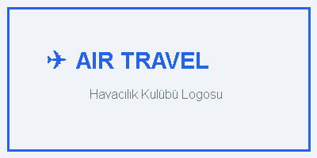

Modül Hakkında & Öğrenme Kazanımları
Web Tabanlı Uygulama Geliştirme Dersi 11. Sınıf MüfredatıBu ders materyali, web sayfalarında ses, video, responsive görsel kullanımı ve semantik HTML5 sayfa yerleşimini pratik ve etkileşimli olarak öğrenmek için hazırlanmıştır.
- Web sayfasına harici eklenti olmadan ses (
<audio>) ve video (<video>) eklemeyi, - Oynatma denetimleri (
controls,autoplay,muted,loop), - Mobil ve masaüstü ekranlar için optimize görseller (
srcset&sizes), <div>çöplüğünden kurtulup anlamsal (<header>,<nav>,<article>vb.) yapı kurmayı.
Modern tarayıcılar (Chrome, Edge, Safari vb.), kullanıcı deneyimini korumak için sesli otomatik oynatmaya (autoplay) izin vermez. Otomatik oynatmanın çalışması için mutlaka muted (sessiz) özelliği eklenmelidir!
📂 Proje Klasöründeki Bağımsız Alıştırma Sayfaları:
Öğrencilerinize bağımsız sekmede veya VS Code editöründe açıp üzerinde değişiklik yaptırabileceğiniz hazır dosyalar:
HTML5 <audio> (Ses) Etiketi
Web sayfalarına ses dosyası ekleme, denetimler ve format uyumluluğuHTML5 öncesinde web sayfalarında müzik ve ses oynatmak için Adobe Flash gibi 3. parti eklentiler gerekiyordu. HTML5 ile gelen <audio> etiketi sayesinde artık hiçbir eklentiye gerek kalmadan doğrudan tarayıcı içinde ses oynatabiliyoruz.
Örnek Kod Yapısı (audiopreview.html)
<audio controls
autoplay
muted
loop>
<source src="audioornek/sound/sound1.mp3" type="audio/mpeg">
<source src="audioornek/sound/sound2.wav" type="audio/wav">
Tarayıcınız ses etiketini desteklemiyor.
</audio>Her tarayıcının desteklediği ses formatı farklılık gösterebilir. Birden fazla
<source> ekleyerek tarayıcının ilk desteklediği formatı sırayla seçmesini sağlarız.
Canlı İnteraktif Önizleme
<audio> Parametreleri ve Anlamları
| Parametre (Attribute) | Açıklama | Örnek Değer / Kullanım |
|---|---|---|
controls |
Oynat, durdur, ses seviyesi ve zaman çubuğunu ekranda gösterir. | <audio controls> |
autoplay |
Sayfa yüklendiğinde ses dosyasını otomatik olarak başlatır. (Tarayıcı politikaları gereği genelde muted ile çalışır) |
<audio autoplay muted> |
loop |
Ses bittiğinde başa sararak sonsuz döngüde tekrar çalmasını sağlar. | <audio loop> |
muted |
Sesin başlangıçta sessiz (mute) olarak açılmasını sağlar. | <audio muted> |
preload |
Sesin sayfa açılışında nasıl önbelleğe alınacağını belirler: none, metadata, auto. |
preload="auto" |
HTML5 <video> (Video) Etiketi
Web sayfalarına video gömme, boyutlandırma ve kontrollerHTML5 <video> etiketi, modern web tarayıcılarında herhangi bir üçüncü parti oynatıcıya gerek duymadan video izletmeyi sağlar. MP4 (H.264), WebM ve Ogg theora gibi formatları yaygın olarak destekler.
Örnek Kod Yapısı (videoprew.html)
<video controls
controlsList="nofullscreen"
width="500px"
height="280px"
autoplay
muted
loop>
<source src="videoornek/video/video1.mp4" type="video/mp4">
<source src="videoornek/video/video2.ogg" type="video/ogg">
Tarayıcınız video etiketini desteklemiyor.
</video>Tarayıcının varsayılan video çubuğundaki tam ekran düğmesini veya indirme düğmesini gizlemek için kullanılır:
controlsList="nodownload nofullscreen"
Canlı Video Önizleme
<video> Özellikleri Tablosu
| Öznitelik | İşlevi | Önemli İpucu |
|---|---|---|
width & height |
Videonun genişliğini ve yüksekliğini belirler. | Piksel cinsinden verilir (ör: width="500"). Belirtilmezse video orijinal boyutunda açılıp sayfa düzenini bozabilir. |
poster |
Video henüz oynatılmadan önce görünen kapak resmi (thumbnail). | Örnek: poster="kapak.jpg". |
controlsList |
Varsayılan denetim çubuğundaki belirli düğmeleri gizler. | nodownload, nofullscreen, noremoteplayback değerlerini alabilir. |
Duyarlı Görseller: <img srcset & sizes>
Farklı ekran genişlikleri ve çözünürlükler için en uygun görseli sunmaGeleneksel web sitelerinde tek bir büyük görsel yüklenirdi. Bu durum mobil cihazlarda yüksek internet kotası harcanmasına ve sayfanın yavaş açılmasına sebep olurdu. srcset ve sizes nitelikleri sayesinde tarayıcıya birden fazla görsel boyutu sunarız ve tarayıcı ekranına en uygun olanı kendisi seçer.
Örnek Kod (srcset_ornek.html)
<p>Src set ornek</p>
<img src="srcsetOrnek/img/autum-800.jpg"
srcset="srcsetOrnek/img/autum-400.jpg 400w,
srcsetOrnek/img/autum-800.jpg 800w,
srcsetOrnek/img/autum-1200.jpg 1200w,
srcsetOrnek/img/autum-1600.jpg 1600w"
sizes="(max-width: 800px) 100vw, 1200px"
alt="autum">400w, 800w, 1200w...: Resmin orijinal piksel genişliğini tarayıcıya bildirir.sizes="(max-width: 800px) 100vw, 1200px": Ekran genişliği 800px ve altındaysa görsel ekranın %100'ünü kaplayacak, daha büyükse 1200px genişliğinde olacak demektir.- Tarayıcı ekran çözünürlüğüne (Retina/DPR) ve pencere genişliğine göre en tasarruflu ve net resmi otomatik olarak indirir.
Canlı Responsive Test Alanı

HTML5 Semantik (Anlamsal) Sayfa Yapısı
<div> etiketlerinden anlamsal etiketlere geçişEski HTML sürümlerinde tüm bölümler için <div class="header"> veya <div class="menu"> kullanılırdı (Bkz: proj2.png). HTML5 ile birlikte sayfa parçalarına özel anlamsal etiketler getirilmiştir. Bu etiketler arama motorları (SEO) ve görme engelli ekran okuyucuları için hayati önem taşır.
HTML5 Standart Sayfa Mimarisi
Aşağıdaki blokların üzerine tıklayarak hangi etiketin ne amaçla kullanıldığını öğrenebilirsiniz:
Yan Çubuk (Sidebar, Reklam, İlgili Linkler)
<figure> ve <figcaption> Kullanımı
Görselleri ve altlarındaki açıklama metinlerini semantik olarak gruplamak için kullanılır (Bkz: proje5.png):
<figure>
<img src="UCAK.png" alt="logom" width="200px">
<figcaption>
<a href="UCAK.png">Benim Logom</a>, daha fazla bilgi için
</figcaption>
</figure>Canlı Önizleme:

Semantik Metin Biçimlendirme Etiketleri
proj1.png, proj3.png ve proj4.png dosyalarındaki özel etiketlerin derlemesiHTML5, arama motorlarının ve tarayıcıların metnin ne anlama geldiğini kavraması için çok sayıda semantik metin biçimlendirme etiketi sunar.
Kısaltmaların açılımını title ile verir.
Metnin yazılış yönünü tersine çevirir (dir="rtl|ltr").
Kitap, makale, film gibi bir eserin adını belirtir (İtalik gösterir).
Klavye tuş vuruşları ve kod parçacıkları için.
Kısa alıntıları otomatik olarak tırnak işareti içine alır.
Bayrakları bayrak yapan üstündeki kandır.
Matematiksel değişkenler ve sistem çıktıları.
JavaScript yazmaya gerek kalmadan tıklandığında açılıp kapanan içerik alanı oluşturur (proj1.png).
Göster / Gizle (Tıklayınız)
Başlığa tıkladığınızda bu içeriğe ulaştınız! HTML5'in yerel akordeon öğesidir.
📦 Semantik Olmayan Temel Etiketler: <div> ve <span> Nedir?
HTML'de anlamsal (semantik) bir rolü olmayan ancak web tasarımında CSS stilleri vermek, sayfa düzeni kurmak ve JavaScript ile öğeleri seçmek için en sık kullanılan iki genel amaçlı etiket <div> ve <span> etiketleridir.
<div> Etiketi (Division)
Blok Eleman (Block-level)Division (Bölüm/Bölme) kelimesinden gelir. Bulunduğu satırı yatayda %100 kaplar ve kendisinden önceki ile sonraki öğeleri yeni bir satıra iter.
- CSS Davranışı:
display: block; - Boyutlandırma: CSS ile
width,height,padding,margindoğrudan verilebilir. - Kullanım Amacı: Kutu, panel, sayfa bölümleri, flexbox/grid taşıyıcıları (container) oluşturmak (proj3.png).
- İçerik: Hem blok hem de satır içi tüm etiketleri içine alabilir.
<div style="background-color:red; color:white; padding:20px; border-radius:6px;">
<h3>div etiketim (Blok Eleman)</h3>
<p>div etiketi bloku tarafından sarılmış ve stil uygulanmış bir paragraf.</p>
</div><span> Etiketi (Aralık)
Satır İçi (Inline)Span (Mesafe/Aralık) kelimesinden gelir. Sadece içerdiği metin kadar yer kaplar; yeni bir satıra geçmez ve metnin akışını bölmez.
- CSS Davranışı:
display: inline; - Boyutlandırma: Varsayılan olarak doğrudan
widthveheightalmaz. - Kullanım Amacı: Bir paragraf içindeki bir veya birkaç kelimeyi renklendirmek, arka plan vermek ya da stil uygulamak (proj4.png).
- İçerik: Yalnızca metin ve satır içi öğeleri içine almalıdır.
<p>Bu bir paragraf
<span style="color:green; font-weight:bold;">yeşil ve kalın metin</span>
devamı
<span style="color:blue; font-weight:bold;">mavi ve kalın metin</span>.
</p>Bu bir paragraftır. span ile yeşil vurgulandı ve cümle kesilmeden span ile mavi vurgulandı aynı satırda devam eder.
📊 <div> ile <span> Karşılaştırma Özeti
| Özellik | <div> (Block-level) |
<span> (Inline) |
|---|---|---|
| Görüntüleme Tipi | display: block; |
display: inline; |
| Genişlik (Width) | Satırı boydan boya (%100) kaplar | Yalnızca içerdiği metin kadar yer kaplar |
| Satır Atlama | Yeni bir satırdan başlar, sonrasını alt satıra atar | Satırı bölmez, metin akışında aynı hizada kalır |
| CSS Boyutlandırma | width ve height uygulanabilir |
Doğrudan width/height uygulanamaz |
| İçine Alabileceği Öğeler | Tüm blok ve satır içi öğeler (<p>, <h1>, <div> vb.) |
Yalnızca satır içi öğeler ve metin (içine blok öğe konulmaz) |
| Kullanım Amacı | Sayfa iskeleti, kutular, kartlar, flex/grid sarmalayıcıları | Paragraf içindeki kelimeleri renklendirme, simgeler, rozetler |
Eğer oluşturacağınız alanın HTML5'te anlamsal bir karşılığı varsa <div> yerine semantik etiketi tercih edin (Örn: Başlık için <header>, menü için <nav>, makale için <article>, alt bilgi için <footer>). <div> ve <span> etiketlerini ise semantik bir karşılık bulunmadığında yalnızca görsel stil (CSS) veya JavaScript amacıyla kullanınız.